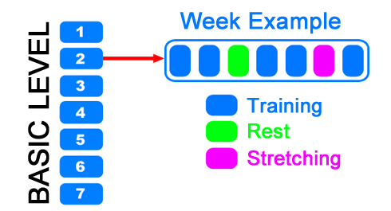
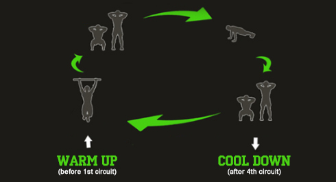
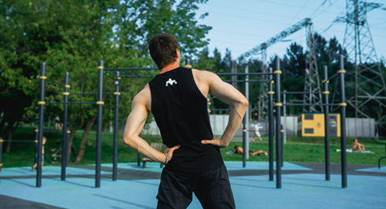

We hapily welcome you to the SOTKA program! We want to remind you of the promise you've made to yourself to commit to the SOTKA program and reach the end of the 100 days. Get ready to change yourself and your life for better! We'll do our best to help you become an absolutely new person within these 100 days!
Let’s begin!
Main information
1. The BASIC level training plan will be from day 1 to day 49 (7 weeks in total), followed by ADVANCED level from day 50 to day 91 (6 weeks), then TURBO level from day 92 to day 98 (1 week).
2. Every day you will recieve an infopost with information that will help you achieve the results you want with this program. Infoposts are packed in theme blocks based on the week: on the first week we will go through all exercises, the second - through healthy eating, the third will give answers to the most common questions and so on.
3. SOTKA uses a practical workout approach: every week you will have 5 training days, 1 day of rest and 1 day of stretching. You can choose your own rest and stretching days depending on your own well-being and schedule. You DON'T DO strength training on these days.
We highly suggest you to take 1 day of full rest per week, as it will increase your chances of finishing the program by 37% and also will give better overall results in the end. Each rest day counts as a successfully completed day for the program.

All of your training sessions should start with warm up! We will cover all the benefits of properly warming up and show how to do it correctly in tomorrow's infopost. You should also finish all your training with cool down, which will also covered in tomorrow's infopost. Warming up prepares your body for the workout, cooling down returns it from "acive mode" to "resting" mode.
BASIC level training plan
ATTENTION!
You should consult your doctor before doing any exercise in this program to ensure that your body can withstand strength training. You are the only one, who is responsible for your health and well-being.

The training routine will consist of 4 sets of reps in a circuit or lap, consisting of: Pull-ups, Squats, Push-ups and then Squats again. All exercises should be done one by one (!) and without rest (!!). This would be 1 circuit. You will do 4 circuits in total. The amount of reps (repetitions) in each exercise you do should determined by yourself, depending on your conditioning level and using an iterative adaptation approach. REGARDLESS YOUR CURRENT MAXIMUM REPS (!!!) we recommend you start with 1 pull-up - 2 squats - 2 push-ups - 2 squats in each circuit. If this is easy for you, then add 1-2-2-2 to the number of reps the next day. using this approach, add reps every day until you find your current training level. For one person that might be 3-6-6-6, for another 5-10-10-10 or 10-20-20-20 etc. It all depends on you and there is no need to chase results of other SOTKA users. If at any given moment you realise that the training volume is too high, DON'T BE AFRAID to make a step back and reduce it by the same amounts.
What if you can't do squats?
If you can't do squats because of injuries or any other reasons, then you can find an alternate exercise consisting of leg extensions which you can perform without problems.
In extreme cases you can remove squats from program, doing only pull-ups and push-ups twice in each circuit. Of course this will decrease the effectiveness of the training by half, because you would not be loading the lower body, but this is a suitable solution if needed.
In extreme cases you can remove squats from program, doing only pull-ups and push-ups twice in each circuit. Of course this will decrease the effectiveness of the training by half, because you would not be loading the lower body, but this is a suitable solution if needed.
Don't be surprised that the offered scheme is so simple. It is perfect to start and will give you excellent results with regular training. During the program we'll correct it several times, increasing the difficulty and intensity. The idea of a circuit approach to training is about gradual increases of the training volume. As your strength increases, you can increase the load by increasing the number of repetitions in the circuits as well as making the exercises themselves more difficult.
IMPORTANT!
The ratio of 1-2-2-2 is our recomendation to keep a balance between different exercises, but depending on your particular strengths and goals it could be 2-7-5-7 or 7-11-16-13 for example.
If you don't have enough strength to do some of the exercises, you can perform easier variations. For example, instead of regular pull-ups you can do Australian pull-ups and instead of regular push-ups you can do knee push-ups. If you choose to do an easier exercise then you should DOUBLE the amount of reps: each one standard pull-up equals to two Australian pull-ups and so on.
3 MAIN PRINCIPLES
The training load in our program is divided in such a way that your body will be able to rehabilitate during the rest-time between daily trainings. BUT! In order to achieve results, you must STRICTLY follow these three main rules:
1.The QUALITY rule. Always try to do exercises PERFECTLY. If you can’t because of exhaustion, then lower the training load. It is better to perfomr a lower quantity properly than a higher amount improperly.
2. The QUANTITY rule. The number of repetitions must be the same in every lap. If you did 3 pull-ups on the first lap, you must do 3 pull-ups on the last lap as well. If you can't keep up with the number of reps, lower the load and DO SIMPLIER EXERCISES OR COMBINE THEM (for example, 3 ordinary + 4 Australian pull-ups)!
3. The TIME rule. The rest time between laps should be STRICTLY 60 sec. If this is not enough time to recover and continue, lower the load by REDUCING THE NUMBER OF REPETITIONS OR COMBINE THEM.
What do we mean by recover here? Your breath should become stable and calm, and your heart rate should lower. It is not about specific numbers, but how you feel. You should not feel drained or exhausted and should feel you have enough energy to start the next lap circuit.
If you feel that your heart is pumping like a madman and can't slow your breath, this means you have overwhelmed yourself and you need to give yourself more rest before starting the next circuit. Tomorrow you should decrease the number of repetitions or combine them with easier variations!
Additional information
1. Your training shoulf ALWAYS start with warm-up and finish with cool down! This will be covered tomorrow.
2. DON'T GO 100% in each circuit! ALWAYS have some energy left. With our training system, you should hav energy left after the last circuit just like you should after the first. You should have less energy left after the last, but you MUST have energy left. ALWAYS HAVE RESERVES!!!
3. It's really important to learn to listen to your body. The sooner you learn this skill, the faster you will start to progress. Don't get stuck on specific numbers and percentages.
4. There are no specific ABS exercises in the BASIC level, because all bodyweight exercises use core muscles if you do them correctly. There is no need for beginners to add direct ABS work, just focus on your technique.
5. You choose when to train by yourself. The main thing is to choose a time that will allow you to do workouts each day around the same time. During SOTKA there will be a dedicated infopost about choosing the right time to train, where we will cover this topic more in depth.
6. Tell your friends and relatives about SOTKA! Having a training buddy is shown to increase motivation and consistency, plus, it's more fun to do it together! You’ll have additional motivation to train regulary and not miss the any days. Of course you can train alone, but this makes it much easier to be lazy. If someone is waiting on you to train together, then laziness will give way to reluctance to let others down!
7. We have official channel in Telegram @SOTKA100app where you can send your questions if you can't find answers for them in the infoposts.
What's next
Tomorrow we will cover all the benefits of doing a proper warm-up before training, and also we will cover why it's important to finish your workouts with a cool down.
